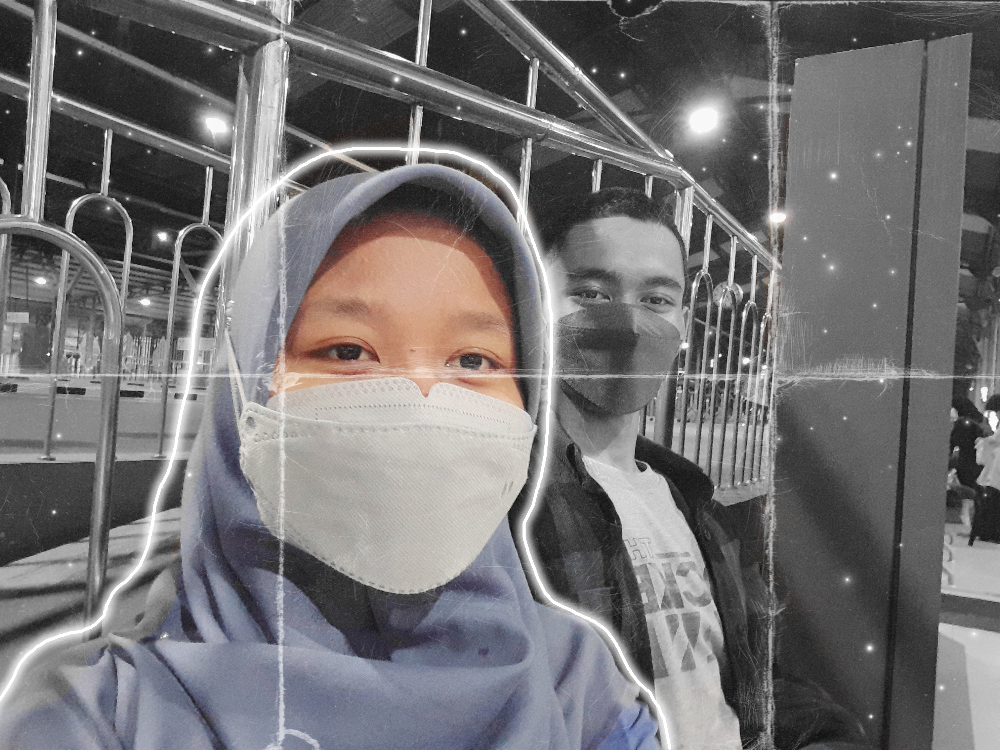
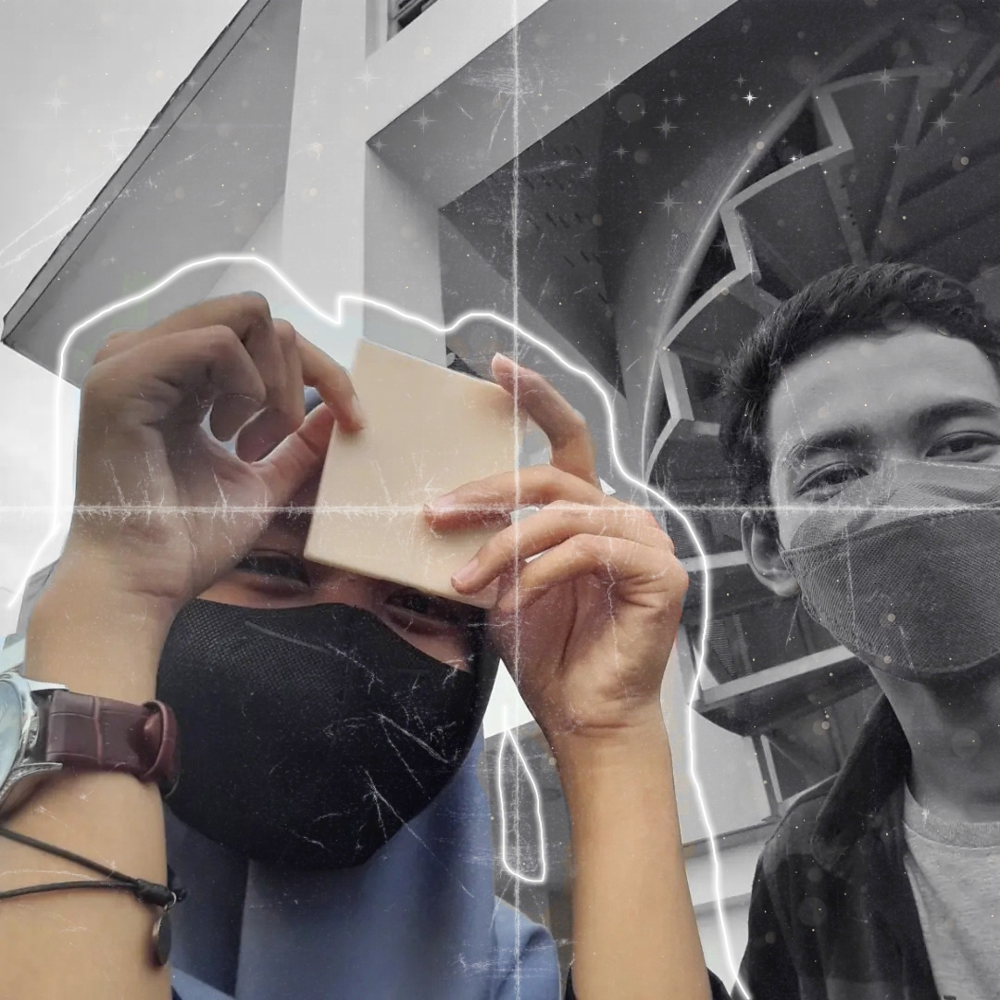

Sepatah

Hii adikkuu tercinta..
Ehmmm btw, aku sengaja membagi surat ini menjadi tiga segmen, tentunya bukan tanpa alasan. Aku ingin disetiap segmennya menyampaikan pesan yang berbeda akan tetapi tetap tujuannya sama. Sebelumnya aku pengen minta maaf ya.. jikalau ada perkataan atau kata yang aku tulis disini, kurang berkenan dihati kamu atau buat kamu ga nyaman.
Aku ga pengen buat kamu menangis atau pun bersedih di hari ulang tahunmu ini, karena aku pengen kamu menjadikan hari ini sebagai batu loncatan dan juga evaluasi diri supaya menjadi lebih baik kedepannya. Jadi aku memutuskan untuk menghemat kata dan lebih memilih untuk menyampaikan pesan yang ada didalam hatiku langsung ke kamu melewati surat yang indah ini.
Hehehehe.. 🤗
Mungkin itu saja segmen SEPATAH, kita lanjut ke segmen kedua yukkk.. Cukup klik teks ini kok..
Kata

Wahhh kita ketemu di segmen keduaa..
Sekali lagi kuucapkan Happy birthday adikkuu. Selamat ulang tahun yang ke 19 yaaa. Wah udah tuaan aja ni, aku kesalip nanti xixixixi. Dari awal, waktu kamu masih sma sampai sekarang udah kuliah, kamu udah ngelakuin banyak hal. Itu udah menjadi salah satu bentuk pengembangan diri yang sangat baik. Berkali kali aku bilang bahwasanya aku bangga banget ama kamu.
Terima kasih banyak udah jadi temen, pacar, dan juga adik yang baik buat aku. Kedepannya jadi istri yaww.. Aamiin..
Banyak masalah dan lika liku, tapi menyerah bukanlah jawaban yang tepat. Disaat kamu menyadarkanku akan kesalahan dan juga rasa pesimisku.. aku sempet mikir juga, allah gaakan ngasi masalah kepada hambanya tanpa memberi jalan keluarnya. Aku berharap kita bisa tetep bersama, buat saling menguatkan dan juga saling menjadi tumpuan. Kita lewatin bareng bareng yaw.
Dihari ini pengharapan ku sebanyak bintang yang bersinar di malam hari. Impianku seluas alam semesta. Eaaaa ga nyambungg.. 😅🤣
Tapi aku sadar, kalo aku hanya hamba allah yang selalu butuh bantuannya.
Aku punya banyak kata didalam pikiranku, namun aku sadar bahwa hanya ada 3 kata yang akan selalu keluar dari dalam hatiku bahwa "aku sayang kamu".
Sudah saatnya kita masuk ke segmen terakhir nihh..
Klik aku yaa..
Untukmu

Yahh ga kerasa udah mau selesai yaa.. maaf yaa aku kurang panjang rangkai katanyaa... Di segmen ini aku ingin banyak banyak bersyukur kepada Allah SWT karena telah dipertemukan sekaligus diperkenalkan dengan kamu. Harapan, doa dan juga dukungan akan tetap selalu aku berikan ke kamu wahai adikku...
Aku berdoa,
Semoga kamu menjadi anak yang sholehah, mementingkan urusan akhirat jadi gausa ikut ikutan buat video tiktok dan joget gajelas. Aamiin...
Semoga hesti jadi anak yang berbakti kepada kedua orang tua dan menjadi insan yang bermanfaat bagi sesama. Aamiin...
Semoga kamu menjadi insan yang selalu menciptakan keindahan dan dapat menerangi dunia, layaknya nama kamu. Aamiin...
Semoga segala urusan kamu di permudah oleh Allah SWT. Aamiin...
Semoga selalu istiqomah menuntut ilmu demi kebaikan dunia dan akhirat. Aamiin...
Semoga dilapangkan dadanya dan juga diberi kekuatan oleh Allah SWT untuk menghadapi dunia ini. Aamiin...
Semoga dipanjangkan umurnya dan dilimpahkan rejeki untuk hesti dan juga keluarga. Aamiin...
Semoga menjadi insan yang lebih baik dan dapat menjadi teladan yang baik bagi para adik adiknya. Aamiin...
Aku minta maaf belum bisa menjadi seperti yang adik inginkan..Belum bisa membagahagiakan dan juga membuat hati kamu tenang..Aku minta maaf 🙏
Tetap menjadi Hesti yang aku kenal yaa...Selalu ceria dan baik hati serta ramah...
Sekali lagii
SELAMAT ULANG TAHUNNN YANG KE SSEMBILAN BELAS... ✨🎉🎂1️⃣9️⃣
MAAAACIWWWW BANYAKKKK...